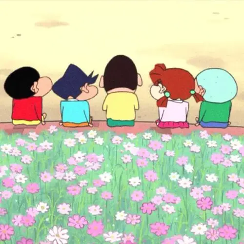

动漫
《蜡笔小新》是由日本漫画家臼井仪人创作的漫画。
1990年8月，在《weekly漫画action》上开始连载。1992年，根据漫画改编的同名动画在朝日电视台播出。2010年7月16日，臼井仪人遗作《蜡笔小新》第50卷出版。 [2] 在作者臼井仪人去世后，作品由“臼井仪人&UY工作室”沿袭原作风格继续创作。
剧情简介
故事舞台是在日本埼玉县春日部市，一位正在“双叶幼稚园”学习的五岁小孩野原新之助（小新），在日常生活中发生的事，日子频繁琐碎却不乏温馨感动。
起初，小新与父亲野原广志和母亲野原美冴（娘家姓：小山）组成一个3人家庭，从小房子搬入两层楼平房。随着故事发展，家中添加了一只被遗弃的小狗“野原小白（小白）”与妹妹“野原向日葵（小葵）”。车子也换了两次（前两台都是被美冴撞毁的）。
家里一度因为被气爆炸毁而暂时搬入鸡飞狗跳庄（胯下痛公寓）一阵子，后来房屋修缮完毕，全家才搬回原住处。
有一阵子美冴的妹妹小山梦冴因为失业暂居野原家二楼，后来搬出去住在他们曾经住过的鸡飞狗跳庄，同时剧里登场的通讯工具逐渐从最初尚未有手机的年代转变成智能手机。
注：早期的动画版常把“春日部市”称为“春我部市”，在漫画单行本的第16卷也曾使用过“春我”二字，现已统一称为“春日部市”。 “双叶幼稚园”也被称为“动感幼稚园”。故事主角野原新之助的汉字写法有可能是“野原新之助”或“野原信之介”。
|
蜡笔小新 |

蜡笔小新 |
蜡笔小新 |
蜡笔小新 |